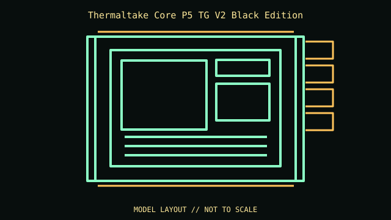

[ IDENTIFIED ENCLOSURE // ATX OPEN-FRAME MID-TOWER CHASSIS ]
Thermaltake Core P5 TG V2 Black Edition
608 × 333 × 570 mm (H × W × D); ATX open-frame mid-tower chassis. Board fit: ATX, microATX and Mini-ITX; eight expansion slots; wall, vertical and horizontal placement options. GPU: Up to 280 mm in the original layout; longer cards require the bracket/reservoir-free configuration described in the manual. Do not apply Core P5 V2 limits to this model. CPU cooler: 180 mm maximum CPU-cooler height. Radiator: Radiator mounting bracket supports up to 480 mm radiator/fan assembly; exact thickness depends on mounting arrangement. PSU: ATX PSU up to 200 mm recommended.

REVISION / CONFIGURATION CAVEAT: Core P5 TG V2 Black Edition (CA-1E7-00M1WN-05) is an open-frame design, not a conventional closed tower; no dust filtering or sound isolation is implied. Secure wall mounting and glass handling require care.
Mechanical specifications and fit
| Exact model | Thermaltake Core P5 TG V2 Black Edition — ATX open-frame mid-tower chassis. |
|---|---|
| Dimensions and construction | 608 × 333 × 570 mm (H × W × D); see cited manufacturer page/manual for measured envelope and revision-specific detail. |
| Motherboard form-factor fit | ATX, microATX and Mini-ITX; eight expansion slots; wall, vertical and horizontal placement options. |
| GPU clearance | Up to 280 mm in the original layout; longer cards require the bracket/reservoir-free configuration described in the manual. Do not apply Core P5 V2 limits to this model. |
| CPU-cooler clearance | 180 mm maximum CPU-cooler height. |
| Radiator clearance | Radiator mounting bracket supports up to 480 mm radiator/fan assembly; exact thickness depends on mounting arrangement. |
| PSU clearance | ATX PSU up to 200 mm recommended. |
| Drive mounts | Four 3.5/2.5-inch total mounting positions (one visible tray and three concealed positions); no external bays. |
Compatibility and service notes
Support the glass panel during removal and use only suitable wall anchors if wall-mounted. Open-frame use increases dust exposure and removes normal front-to-back enclosure airflow assumptions.
- Check GPU length and thickness, its power-plug bend, cooler height and radiator/fan assembly against the same installed configuration; advertised maxima may conflict.
- Confirm motherboard standoffs match the board holes and inspect front-panel, USB and fan-controller headers before powering the build.
- Record the exact SKU, manual revision, removed brackets and unused drive hardware. Measure the individual chassis before shipping or fitting nonstandard parts.
Manufacturer and manual sources
- Thermaltake Core P5 TG V2 Black Edition — manufacturer product specificationsManufacturer product/model page; use the SKU and configuration that match the specimen.
- Thermaltake Core P5 TG V2 — user manualModel-specific installation/manual reference for mounting diagrams and configuration limits.
Clearance limits describe separate manufacturer fit conditions; they are not a promise that all maximum-size parts fit simultaneously. Confirm the exact revision before purchase or installation.